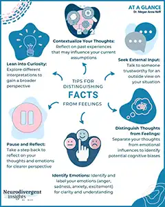
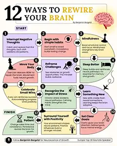
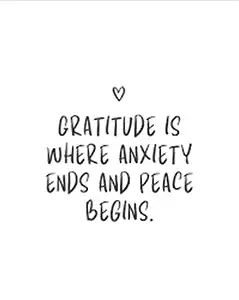

The Savvy Method
Anxiety is an experience, not an identity.
Home
Why Anxiety Repeats Itself
Breaking the Cycle
Separating Facts from Feelings
Rewriting Thought Patterns
Visualization & Manifestation
Gratitude & Emotional State
My Story
Image Gallery
Thoughtwork Reflection Builder
Image Gallery
Key Ideas Illustrated
Looking Forward
The Anxiety Cycle
Breaking the Cycle

Facts vs Feelings

Rewiring your Thoughts
Visualization and Affirmations

Gratitude
The Journey